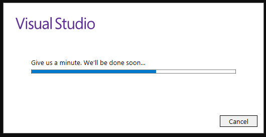
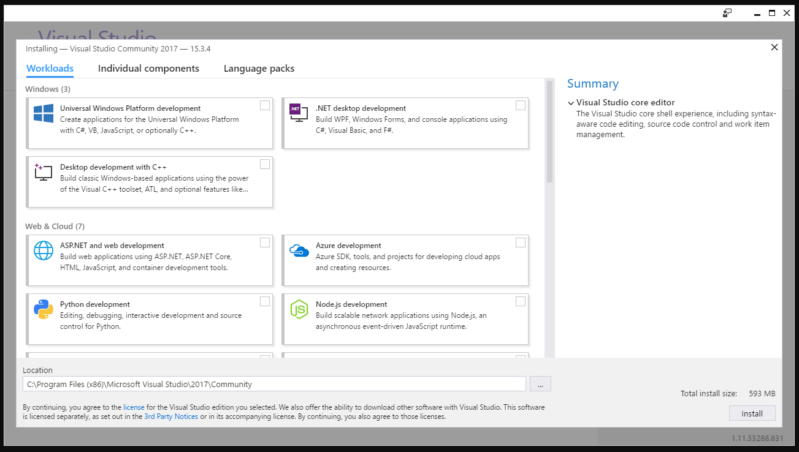
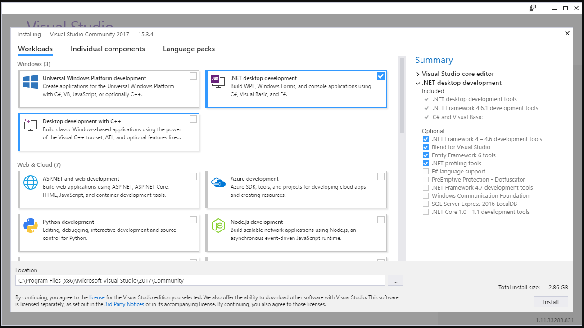
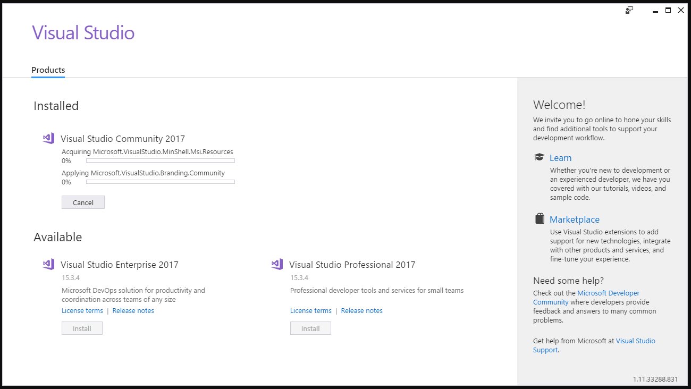
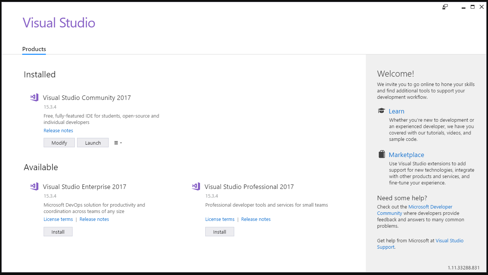
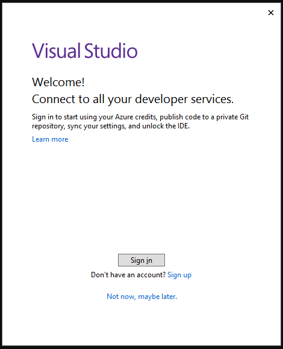
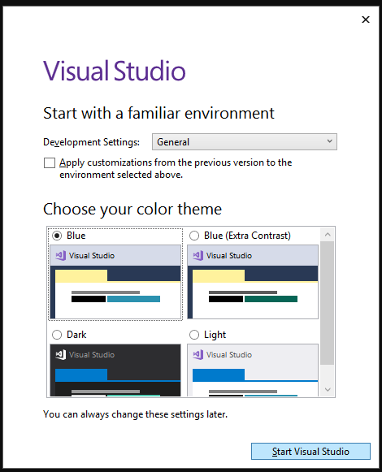
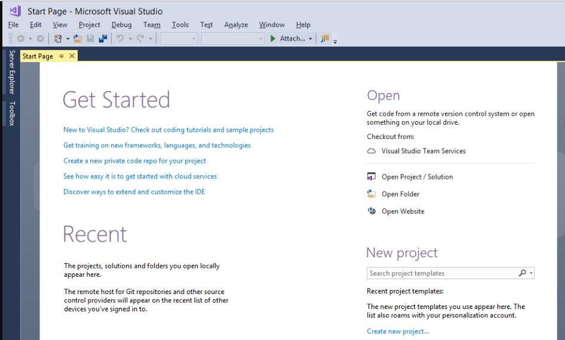

This How To will show you where to get Visual Studio Community 2017, how to install it, and how to get your SDX mods linked in it for development.
Visual Studio allows you to add references to the Assembly-CSharp.dll, and give you Intellisense, which makes it easier to find and program things.
You can download Visual Studio Community 2017 here.
Begin the installation process by doubling clicking on the downloaded file.

The initial installation screen can be intimidating, you you'll want to look for ".NET desktop development"

Select it by clicking the white box, and clicking on the Install.

The installation process can take anywhere from 30 minutes to a few hours, depending on your internet speed and computer..

Once finished, you'll be presented with the Installed screen.

When ready, click on the Launch button to go through an initial configuration. You can skip the Sign In process by clicking on "Not now, maybe later."

The next screen determines the colour theme of your Visual Studio.

Once you have selected your option, click on Start Visual Studio

Created with the Personal Edition of HelpNDoc: Generate EPub eBooks with ease